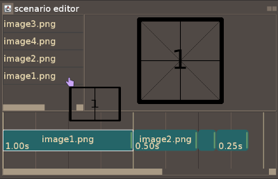

the scenario editor allows you to arrange your frame's order
and their duration which will compose your movie.
here is a preview of the scenario editor element :
the scenario editor is divided into 3 components :
the images list will show all the available images of your project.
to add an element to the timeline you can either :
- right-click show the contextual menu and click on "add to timeline"
- drag the image of choice then drop it into the timeline.
the timeline is where you can arrange your different frames.
there are different actions you can do on a timeline element :
one of the main features of the timeline is the keyboard control.
when you click an element, it will be selected (white highlight)
the selected element's image will then appear in the center preview.
use the left and right arrow keys to select the next (or previous) element.
holding CTRL + arrow will move the element instead of moving the selection.
holding CTRL + SHIFT + arrow will change the element's duration by .05s
holding CTRL + SHIFT + ALT + arrow will change the elements duration by .1s